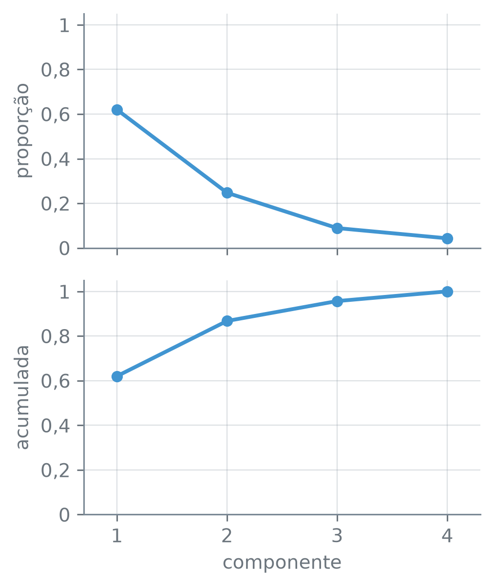
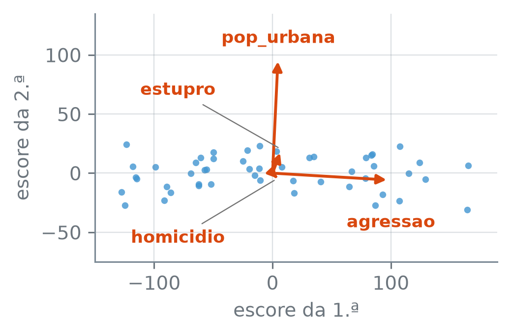
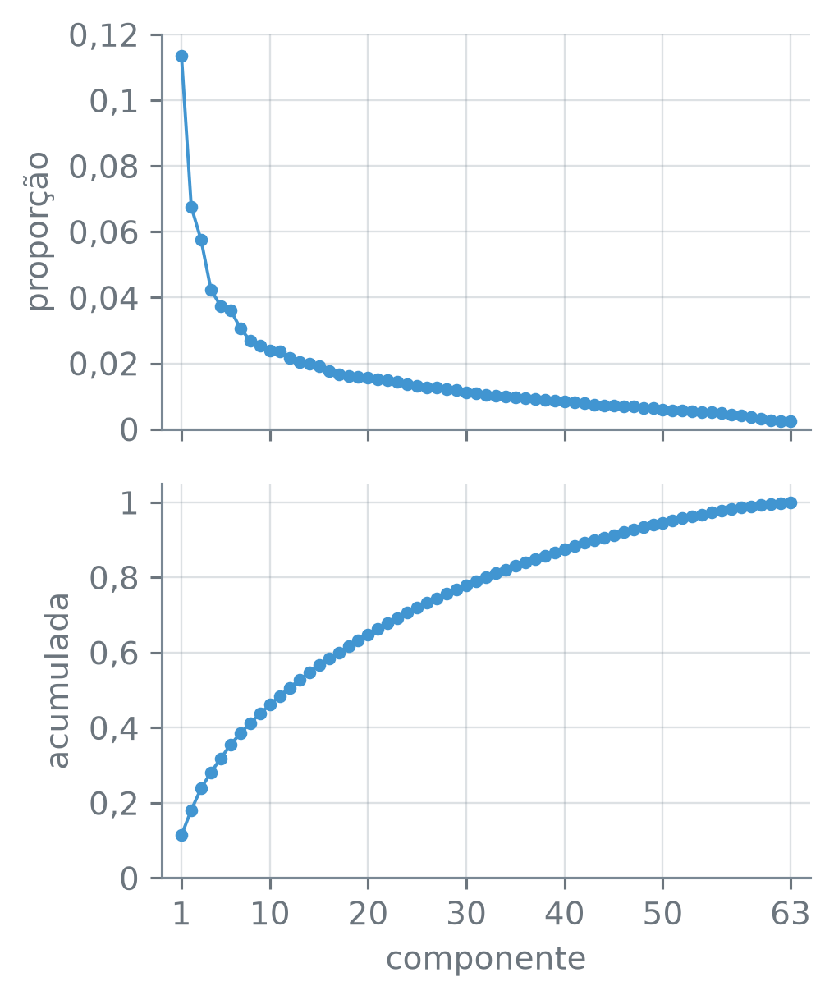

numero_br = lambda v, casas=2: (
f"{v:,.{casas}f}"
.replace(",", "_")
.replace(".", ",")
.replace("_", ".")
.replace("-", "−")
)Proporção da Variância Explicada
Nota
Esta seção corresponde às seções 12.2.3, 12.2.4 e 12.2.5 de James et al. (2023).
Quatro colunas não cabem inteiras num plano. Quanto da variação do USArrests fica fora das duas primeiras componentes principais? E o resumo sairia o mesmo se as prisões por agressão fossem contadas a cada 100 habitantes, e não a cada 100.000?
A função numero_br escreve os números com a pontuação brasileira:
Quanto cada componente carrega
Com as colunas padronizadas, cada uma tem variância 1, e a tabela inteira tem variância total 4, a soma das quatro. Os escores das quatro componentes também têm, cada um, uma variância. Como essas variâncias se comparam com as das colunas?
import numpy as np
import pandas as pd
from sklearn.decomposition \
import PCA
from sklearn.pipeline import (
make_pipeline)
from sklearn.preprocessing \
import StandardScaler
prisoes = pd.read_csv(
"dados/USArrests.csv",
index_col="estado")
n_est = len(prisoes)
padronizador = StandardScaler()
padr = padronizador.fit_transform(
prisoes)
pca = make_pipeline(
StandardScaler(), PCA())
escores = pca.fit_transform(
prisoes)
var_col = padr.var(axis=0)
var_z = escores.var(axis=0)
print("estados:", n_est)
print("variâncias das colunas:")
print(" ", *[numero_br(v)
for v in var_col])
print(" soma:",
numero_br(var_col.sum()))
print("variâncias dos escores:")
print(" ", *[numero_br(v)
for v in var_z])
print(" soma:",
numero_br(var_z.sum()))
cai = np.all(np.diff(var_z) < 0)
print(" cada uma < a anterior:",
bool(cai))estados: 50
variâncias das colunas:
1,00 1,00 1,00 1,00
soma: 4,00
variâncias dos escores:
2,48 0,99 0,36 0,17
soma: 4,00
cada uma < a anterior: TrueAs quatro colunas têm variância 1,00 cada; os escores, não: a primeira componente fica com 2,48, e cada uma das seguintes com menos que a anterior. As duas listas somam o mesmo, 4,00. A PCA redistribui a variação entre as componentes sem mudar o total, e põe o máximo possível na primeira componente, depois o máximo do que sobra na segunda, e assim por diante.
A primeira componente fica, então, com 2,48 dos 4,00 da variância total, ou 0,62 dela. Essa fração é a proporção da variância explicada pela componente, e a PCA a devolve pronta, no atributo explained_variance_ratio_. A soma das proporções das \(M\) primeiras componentes é a proporção acumulada:
passo_pca = pca[-1]
pve = (passo_pca
.explained_variance_ratio_)
acumulada = np.cumsum(pve)
print("proporção · acumulada")
for m in range(4):
a = numero_br(pve[m], 4)
b = numero_br(acumulada[m], 4)
rotulo = f"PC{m + 1}:"
print(rotulo, a, "·", b)proporção · acumulada
PC1: 0,6201 · 0,6201
PC2: 0,2474 · 0,8675
PC3: 0,0891 · 0,9566
PC4: 0,0434 · 1,0000np.cumsum(arr)— as somas acumuladas: o elemento \(m\) do resultado é a soma dos \(m\) primeiros elementos dearr.
A primeira componente explica 0,6201 da variância, e as duas primeiras juntas, 0,8675.
Com as colunas centradas, a variância total da tabela é a soma das variâncias das \(p\) colunas,
\[ \sum_{j=1}^{p}\frac{1}{n}\sum_{i=1}^{n} x_{ij}^2, \]
e a variância da componente \(m\) é a dos escores dela,
\[ \frac{1}{n}\sum_{i=1}^{n} z_{im}^2. \]
A proporção da variância explicada pela componente \(m\), ou PVE (do inglês proportion of variance explained), é a razão entre as duas:
\[ \text{PVE}_m = \frac{\sum_{i=1}^{n} z_{im}^2} {\sum_{j=1}^{p}\sum_{i=1}^{n} x_{ij}^2}. \]
As proporções não são negativas e, somadas todas as componentes, dão 1. A proporção acumulada das \(M\) primeiras é \(\text{PVE}_1 + \dots + \text{PVE}_M\).
O \(1/n\) aparece em cima e embaixo e se cancela na razão. A conta, então, sai direto dos escores e da tabela padronizada, sem o divisor:
num = (escores**2).sum(axis=0)
den = (padr**2).sum()
igual = np.allclose(
num / den, pve)
print("à mão, igual:",
bool(igual))à mão, igual: TrueA conta à mão dá as mesmas proporções da PCA. Num gráfico das proporções, cada componente vira um ponto:
virgula = lambda v, _: (
f"{v:g}".replace(".", ","))
ks = np.arange(1, 5)
fig, (ax1, ax2) = plt.subplots(
2, 1, figsize=(3.8, 4.4),
sharex=True)
ax1.plot(ks, pve, "o-",
color="C0")
ax2.plot(ks, acumulada, "o-",
color="C0")
ax1.set_ylabel("proporção")
ax2.set_ylabel("acumulada")
ax2.set_xlabel("componente")
ax2.set_xticks(ks)
ax2.set_xlim(0.7, 4.3)
for ax in (ax1, ax2):
ax.set_ylim(0, 1.05)
ax.yaxis.set_major_formatter(
virgula)
plt.tight_layout()
plt.show()
USArrests, com as colunas padronizadas (em cima) e a proporção acumulada (embaixo).
plt.subplots(2, 1, ..., sharex=True)— dois gráficos empilhados, com o mesmo eixo horizontal, um emax1e outro emax2.
Um gráfico da proporção contra o número da componente, como o de cima, se chama scree plot, ou gráfico do cotovelo, pela forma que costuma ter: uma queda forte nas primeiras componentes e depois um trecho quase plano.
A proporção acumulada e a aproximação
A aproximação de dimensão \(M\) troca cada valor \(x_{ij}\) pela soma \(\sum_{m=1}^{M} z_{im}\phi_{jm}\) das \(M\) primeiras componentes. Quanto mais componentes, mais variância a aproximação guarda e menos ela erra. Chame de RSS a soma dos quadrados dos erros da aproximação, em todos os estados e todas as colunas, e de TSS a soma dos quadrados dos valores da tabela, \(\sum_j\sum_i x_{ij}^2\). A conta abaixo calcula, para cada \(M\), o erro quadrático médio por valor e \(1 - \text{RSS}/\text{TSS}\).
O erro da aproximação e a proporção acumulada têm alguma relação?
cargas = passo_pca.components_
tss = (padr**2).sum()
lista = []
erros = []
cab = "M: erro por valor"
print(cab, "· 1 − RSS/TSS")
for M in range(1, 5):
zs = escores[:, :M]
aprox = zs @ cargas[:M]
resto = padr - aprox
rss = (resto**2).sum()
lista.append(1 - rss / tss)
erros.append(
(resto**2).mean())
a = numero_br(erros[-1], 4)
b = numero_br(lista[-1], 4)
print(f"M = {M}:", a, "·", b)
igual = np.allclose(lista,
acumulada)
print("1 − RSS/TSS = acumulada:",
bool(igual))
media = tss / padr.size
print("média dos x² igual a 1:",
bool(np.isclose(media, 1)))M: erro por valor · 1 − RSS/TSS
M = 1: 0,3799 · 0,6201
M = 2: 0,1325 · 0,8675
M = 3: 0,0434 · 0,9566
M = 4: 0,0000 · 1,0000
1 − RSS/TSS = acumulada: True
média dos x² igual a 1: Truearr.size— o número de valores do array, linhas vezes colunas.
A coluna da direita repete a proporção acumulada impressa acima: a proporção acumulada é o complemento do erro relativo da aproximação, \(\text{RSS}/\text{TSS}\). A coluna da esquerda é o erro quadrático médio por valor: 0,3799 com uma componente e 0,1325 com duas. Os dois somam 1 em cada linha, e o motivo está no último booleano: numa tabela padronizada, a média dos \(x_{ij}^2\) é 1, e o erro por valor, que é RSS dividido pelo número de valores, fica igual a \(\text{RSS}/\text{TSS}\). Com três componentes, o erro, 0,0434, é a proporção que só a quarta componente explica, também 0,0434: é o que fica de fora.
Por que a variância total se divide assim? Em cada estado, a origem, o ponto \(x_i\) e o pé dele sobre as \(M\) primeiras componentes formam um triângulo retângulo, como o triângulo verde do Alabama na primeira figura da seção 15.2. Pelo teorema de Pitágoras, o quadrado da distância do ponto à origem, \(\sum_j x_{ij}^2\), é o quadrado da distância do pé à origem mais o quadrado do resto, e o primeiro é \(\sum_{m=1}^{M} z_{im}^2\), porque as cargas de cada componente têm comprimento 1 e as direções são perpendiculares entre si. Somado nos \(n\) estados e dividido por \(n\), isso dá:
\[ \begin{aligned} \sum_{j=1}^{p}\frac{1}{n}\sum_{i=1}^{n} x_{ij}^2 &= \sum_{m=1}^{M}\frac{1}{n}\sum_{i=1}^{n} z_{im}^2 \\ &\quad + \frac{\text{RSS}}{n}. \end{aligned} \]
A variância total, à esquerda, é a variância das \(M\) primeiras componentes mais o erro da aproximação. Divididos os três termos pela variância total, \(\text{TSS}/n\), o primeiro vira 1, o segundo vira a proporção acumulada e o terceiro, \(\text{RSS}/\text{TSS}\).
A proporção acumulada das \(M\) primeiras componentes é
\[ \text{PVE}_1 + \dots + \text{PVE}_M = 1 - \frac{\text{RSS}}{\text{TSS}} \]
É o \(R^2\) da seção 8.2, com a tabela aproximada no lugar das respostas previstas e a própria tabela no lugar das respostas. Como a variância total não muda, as componentes que guardam a maior variância são as que deixam o menor erro: a direção de maior variância e a reta mais próxima dos pontos coincidem.
Padronizar ou não
Tudo até aqui usou as colunas padronizadas. A PCA sozinha só centra as colunas: cada uma entra com a variância que tem, na unidade em que foi medida. Se uma coluna tem quase toda a variância da tabela, para onde deve apontar a primeira componente?
variancia = prisoes.var()
total = variancia.sum()
fatia = variancia / total
f_agr = fatia["agressao"]
print("fatia de agressao:",
numero_br(f_agr, 3))
cru = PCA().fit(prisoes)
abs_cru = np.abs(cru.components_)
nomes = prisoes.columns
c_cru = pd.Series(abs_cru[0],
index=nomes)
print("maior |carga| na PC1:")
print(" ", c_cru.idxmax(),
numero_br(c_cru.max(), 3))
pve_cru = (cru
.explained_variance_ratio_)
print("proporção da PC1:",
numero_br(pve_cru[0], 3))fatia de agressao: 0,956
maior |carga| na PC1:
agressao 0,995
proporção da PC1: 0,966pd.Series(arr, index=nomes)— umaSeriescom os valores do arrayarr, cada um rotulado pelo nome correspondente emnomes.
agressao tem, sozinha, 0,956 da variância total das quatro colunas, e a primeira componente é quase ela: a maior carga, em valor absoluto, é a de agressao, 0,995, e a componente explica 0,966 da variância.
A igualdade entre \(1 - \text{RSS}/\text{TSS}\) e a proporção acumulada não depende da padronização: o triângulo retângulo vale para qualquer tabela centrada. Na tabela só centrada, com duas componentes:
cent = prisoes.to_numpy()
cent = cent - cent.mean(axis=0)
z_cru = cru.transform(prisoes)
ap = (z_cru[:, :2]
@ cru.components_[:2])
rss = ((cent - ap)**2).sum()
tss_cru = (cent**2).sum()
r2 = 1 - rss / tss_cru
acum2 = pve_cru[:2].sum()
print("1 − RSS/TSS:",
numero_br(r2, 4))
print("acumulada, M = 2:",
numero_br(acum2, 4))
print("iguais:",
bool(np.isclose(r2, acum2)))1 − RSS/TSS: 0,9934
acumulada, M = 2: 0,9934
iguais: Truecru.transform(prisoes)— os escores dos estados nas componentes já calculadas pelofit.
O gráfico dos escores das duas primeiras componentes, com as cargas das colunas em setas, mostra o que a primeira componente virou:
fig, ax = plt.subplots(
figsize=(3.8, 2.8))
ax.scatter(
z_cru[:, 0], z_cru[:, 1],
s=12, color="C0", alpha=0.8,
linewidths=0)
seta = dict(color="C1",
arrowstyle="-|>", lw=1.5)
fio = dict(arrowstyle="-",
color="0.45", lw=0.6)
# onde fica o nome de cada seta
lugar = {
"agressao": (100, -42),
"pop_urbana": (5, 114),
"estupro": (-80, 70),
"homicidio": (-80, -55)}
for j, coluna in enumerate(nomes):
x, y = 100 * cru.components_[
:2, j]
ax.annotate("", xy=(x, y),
xytext=(0, 0),
arrowprops=seta)
curta = np.hypot(x, y) < 50
ax.annotate(coluna, (x, y),
xytext=lugar[coluna],
ha="center", va="center",
fontsize=9, color="C1",
fontweight="bold",
arrowprops=(fio if curta
else None))
ax.set_xlim(-150, 190)
ax.set_ylim(-75, 135)
ax.set_xticks([-100, 0, 100])
ax.set_aspect("equal")
ax.set_xlabel("escore da 1.ª")
ax.set_ylabel("escore da 2.ª")
plt.tight_layout()
plt.show()
USArrests pelos escores das duas primeiras componentes, calculados com as colunas só centradas, sem padronizar, um ponto azul por estado. As setas laranja são as cargas de cada coluna nas duas componentes, multiplicadas por 100 para ficarem visíveis na escala dos escores. As de estupro e homicidio são curtas, junto da origem, e o nome de cada uma se liga à ponta da seta por um fio cinza; a de homicidio fica quase toda sob a base da de agressao.
ax.annotate(coluna, (x, y), xytext=lugar[coluna])— semtextcoords, oxytexté uma posição nos eixos do gráfico, e não um deslocamento.
Os estados se espalham quase só na horizontal, ao longo da seta de agressao: o gráfico mostra, praticamente, as prisões por agressão de cada estado.
E se agressao fosse contada a cada 100 habitantes? É a mesma medida dividida por 1.000, e a variância dela, dividida por 1.000², fica um milhão de vezes menor. A tabela abaixo põe lado a lado a primeira componente em três versões: a da tabela como está (cru), a da tabela com agressao por 100 habitantes, sem padronizar (÷ 1.000), e a das colunas padronizadas (padr.):
por_100 = prisoes.assign(
agressao=prisoes["agressao"]
/ 1000)
cru100 = PCA().fit(por_100)
c1 = pd.Series(
np.abs(cru100.components_[0]),
index=nomes)
print("maior |carga| na PC1,")
print(" ÷ 1.000:", c1.idxmax(),
numero_br(c1.max(), 3))
j = nomes.get_loc("agressao")
pve100 = (cru100
.explained_variance_ratio_)
tab = pd.DataFrame({
"cru": [abs_cru[0, j],
pve_cru[0]],
"÷ 1.000": [c1["agressao"],
pve100[0]],
"padr.": [abs(cargas[0, j]),
pve[0]]},
index=["|carga| agressao",
"proporção da PC1"])
t = tab.style.set_uuid("escalas")
t.format(
lambda v: numero_br(v, 3))maior |carga| na PC1,
÷ 1.000: pop_urbana 0,928| cru | ÷ 1.000 | padr. | |
|---|---|---|---|
| |carga| agressao | 0,995 | 0,002 | 0,583 |
| proporção da PC1 | 0,966 | 0,733 | 0,620 |
df.assign(agressao=...)— uma cópia da tabela com a colunaagressaotrocada pelos valores dados; a original não muda.df.columns.get_loc(nome)— a posição da coluna de nomenome; aqui, a deagressao, para ler a carga dela emabs_crue emcargas.
Sem padronizar, a carga de agressao na primeira componente cai, em valor absoluto, de 0,995 para 0,002, e quem passa a dominar é pop_urbana, com 0,928; a primeira componente explica agora 0,733 da variância, contra 0,966 antes. A mesma tabela, com uma unidade trocada, dá outro resumo. Com as colunas padronizadas, na última coluna, a carga de agressao é 0,583 e a proporção, 0,620. A conta abaixo refaz essa versão com agressao a cada 100 habitantes: a troca de unidade muda alguma coisa?
pad100 = make_pipeline(
StandardScaler(), PCA())
pad100.fit(por_100)
pca100 = pad100[-1]
r100 = (pca100
.explained_variance_ratio_)
c100 = np.abs(pca100.components_)
iguais_pve = np.allclose(
r100, pve)
iguais_c = np.allclose(c100,
np.abs(cargas))
cab = "padronizando, iguais"
print(cab, "a antes:")
print(" proporções:",
bool(iguais_pve))
print(" |cargas|:",
bool(iguais_c))padronizando, iguais a antes:
proporções: True
|cargas|: TrueNão muda nada: as proporções e as cargas, em valor absoluto, saem as mesmas de antes, porque padronizar divide cada coluna pelo próprio desvio padrão e apaga a unidade.
Não é desejável que o resumo dependa de uma escolha arbitrária de unidade, e por isso, em geral, as colunas se padronizam antes da PCA. No USArrests elas estão em unidades diferentes, prisões por 100.000 habitantes e percentual, e padronizar é o caminho. Quando todas as colunas estão na mesma unidade, como é o caso da expressão de milhares de genes medidos do mesmo jeito, pode-se deixá-las sem padronizar, e aí os genes que mais variam pesam mais. A padronização, nesse caso, é uma escolha: ela dá a cada gene o mesmo peso. O NCI60, adiante, entra padronizado.
Nota
O sinal de cada componente é arbitrário, como na seção 15.2. A PCA desta versão do scikit-learn fixa uma convenção, que deixa positiva a maior carga, em valor absoluto, de cada componente, e o booleano confere nas quatro componentes do USArrests padronizado:
abs_c = np.abs(cargas)
maior = abs_c.argmax(axis=1)
topo = cargas[np.arange(4), maior]
print("PCA, maior |carga| > 0:",
bool((topo > 0).all()))PCA, maior |carga| > 0: Trueabs_c.argmax(axis=1)— a posição do maior valor em cada linha;cargas[np.arange(4), maior]— em cada linha, o elemento da coluna indicada emmaior.
Quantas componentes
Quantas componentes guardar? No USArrests, as duas primeiras explicam 0,8675 da variância. O gráfico do cotovelo se lê pelas quedas entre componentes vizinhas; o sinal de menos em -np.diff faz das diferenças quedas:
quedas_us = -np.diff(pve)
print("quedas entre vizinhas:")
print(" ", *[numero_br(v, 4)
for v in quedas_us])
q = quedas_us
print("2.ª queda ÷ 3.ª:",
numero_br(q[1] / q[2]))quedas entre vizinhas:
0,3726 0,1583 0,0458
2.ª queda ÷ 3.ª: 3,46A proporção cai 0,3726 da primeira para a segunda componente, 0,1583 da segunda para a terceira e 0,0458 da terceira para a quarta. Quem põe o cotovelo depois da segunda tem argumento: a primeira queda é grande, e a seguinte, bem menor. Quem o põe depois da terceira também tem: a segunda queda ainda é 3,46 vezes a terceira.
Essa leitura é ad hoc: não há um critério objetivo e único para decidir quantas componentes bastam. A resposta depende dos dados e do uso. Na prática, olham-se as primeiras componentes em busca de padrões nos dados, e segue-se olhando enquanto eles aparecerem.
E no NCI60, com muito mais genes do que amostras? Antes de ver a saída: a primeira componente vai explicar mais ou menos da variância do que a do USArrests, 0,6201? Primeiro, o tamanho da tabela, a escala dos genes e o número de componentes, com os genes padronizados:
nci = pd.read_csv(
"dados/NCI60.csv.gz")
genes = nci.drop(columns="tipo")
n, p = genes.shape
print("amostras:", n)
print("genes:", numero_br(p, 0))
v = genes.var()
razao = v.max() / v.min()
print("maior/menor variância:",
numero_br(razao, 0))
fatia_g = v.max() / v.sum()
print("fatia do mais variável:",
numero_br(fatia_g, 4))
pca_nci = make_pipeline(
StandardScaler(), PCA())
pca_nci.fit(genes)
passo_nci = pca_nci[-1]
pve_nci = (passo_nci
.explained_variance_ratio_)
print("componentes:",
passo_nci.n_components_)
print("mín(n − 1, p):",
min(n - 1, p))
print("a 64.ª é quase zero:",
bool(pve_nci[-1] < 1e-10))
uteis = pve_nci[:63]
soma = uteis.sum()
print("as 63 somam 1:",
bool(np.isclose(soma, 1)))amostras: 64
genes: 6.830
maior/menor variância: 289
fatia do mais variável: 0,0028
componentes: 64
mín(n − 1, p): 63
a 64.ª é quase zero: True
as 63 somam 1: Truepca_nci[-1].n_components_— o número de componentes que aPCAcalculou.
São 64 amostras e 6.830 genes. Os genes estão todos na mesma unidade, mas a maior variância entre eles é 289 vezes a menor. Nenhum gene sozinho domina a tabela: o mais variável fica com 0,0028 da variância total, longe dos 0,956 de agressao no USArrests. Ainda assim, sem padronizar, os genes de maior variância pesariam mais nas primeiras componentes. Padronizados, todos entram com o mesmo peso.
A PCA devolve 64 componentes, mas a última tem proporção praticamente nula: centradas, as 64 amostras somam zero em cada gene, e uma delas fica determinada pelas outras 63. Com \(n\) observações e \(p\) colunas, há no máximo \(\min(n - 1, p)\) componentes com variância maior que zero, aqui 63, e as proporções delas somam 1. As primeiras proporções, a acumulada e as quedas entre vizinhas:
cab = "proporção das 5"
print(cab, "primeiras:")
print(" ", *[numero_br(v, 3)
for v in uteis[:5]])
acum_nci = np.cumsum(uteis)
print("acumulada:")
for M in [7, 20]:
v = acum_nci[M - 1]
print(f" M = {M}:",
numero_br(v, 3))
quedas = -np.diff(uteis)
k = quedas.argmax() + 1
print(f"maior queda: da {k}.ª",
f"para a {k + 1}.ª")
resto = quedas[3:].max()
cab = "maior queda da 4.ª"
print(cab, "em diante:",
numero_br(resto, 4))
k4 = quedas[3:].argmax() + 4
print(f" é da {k4}.ª para a",
f"{k4 + 1}.ª")proporção das 5 primeiras:
0,114 0,068 0,058 0,042 0,037
acumulada:
M = 7: 0,385
M = 20: 0,648
maior queda: da 1.ª para a 2.ª
maior queda da 4.ª em diante: 0,0055
é da 6.ª para a 7.ªA primeira componente explica 0,114 da variância, contra 0,6201 no USArrests. As sete primeiras juntas chegam só a 0,385, e as vinte primeiras, a 0,648: mesmo com vinte componentes, fica de fora 0,352, que é 1 menos 0,648.
ks_nci = np.arange(1, 64)
fig, (ax1, ax2) = plt.subplots(
2, 1, figsize=(3.8, 4.4),
sharex=True)
ax1.plot(ks_nci, uteis, "o-",
color="C0", markersize=3,
linewidth=1)
ax2.plot(ks_nci, acum_nci, "o-",
color="C0", markersize=3,
linewidth=1)
ax1.set_ylabel("proporção")
ax2.set_ylabel("acumulada")
ax2.set_xlabel("componente")
ax1.set_ylim(0, 0.12)
ax2.set_ylim(0, 1.05)
ax2.set_xticks([1, 10, 20, 30,
40, 50, 63])
ax2.set_xlim(-1, 65)
for ax in (ax1, ax2):
ax.yaxis.set_major_formatter(
virgula)
plt.tight_layout()
plt.show()
NCI60, com os genes padronizados (em cima) e a proporção acumulada (embaixo).
ax.plot(..., markersize=3, linewidth=1)— pontos e linha mais finos, para caberem as 63 componentes.
Aqui o cotovelo é bem menos nítido. A maior queda é da primeira para a segunda componente; a partir da 4.ª, nenhuma queda entre vizinhas passa de 0,0055, e a curva desce devagar. Essa queda de 0,0055, da 6.ª para a 7.ª componente, é a última que se destaca, e termina na sétima: por isso se olham as sete primeiras. As quedas seguintes ficam todas abaixo dela, e o gráfico continua não decidindo onde fica o cotovelo.
A escolha fica objetiva quando as componentes servem a uma análise supervisionada. Na regressão por componentes principais da seção 11.6, o número \(M\) de componentes é um parâmetro de ajuste, escolhido pelo erro de validação cruzada, como o \(\lambda\) da ridge. Sem uma resposta, não há erro a medir, e a escolha continua sendo de quem analisa.
A regressão da seção 11.6 usa os escores no lugar das colunas originais, e o mesmo vale para outros métodos: uma classificação ou um agrupamento podem receber a tabela \(n \times M\) dos \(M\) primeiros escores, em vez da tabela \(n \times p\) inteira. Quando a informação que interessa está concentrada nas primeiras componentes e as últimas carregam sobretudo ruído, trocar a tabela pelos primeiros escores pode deixar o resultado menos ruidoso. A seção 15.6 faz isso com o NCI60: agrupa as amostras pelos primeiros escores, em vez dos 6.830 genes.
De volta às perguntas do começo: com as colunas padronizadas, as duas primeiras componentes do USArrests guardam 0,8675 da variância, e 0,1325 fica fora do plano. E, padronizada, a tabela dá o mesmo resumo com as prisões por agressão contadas a cada 100 ou a cada 100.000 habitantes.
James, Gareth, Daniela Witten, Trevor Hastie, Robert Tibshirani, e Jonathan Taylor. 2023. An Introduction to Statistical Learning with Applications in Python. Springer.